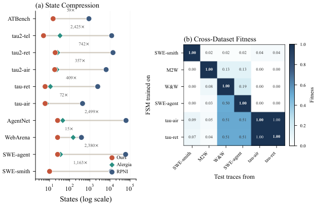
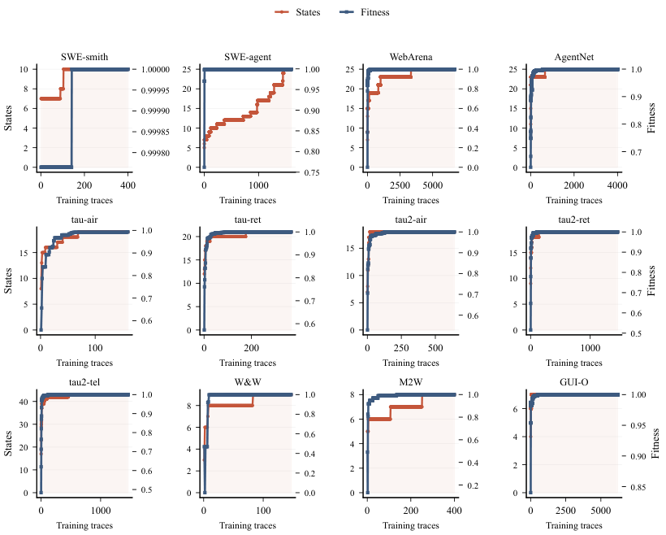

Automata from Agent Traces: One Finite-State Machine per Corpus, and What It Says About Harnesses
TL;DR
- "Automata from Agent Traces: Failure and Next-Step Prediction" (arXiv 2608.23670; Seonglae Cho, Franklin Cardenoso Fernandez, Umar Mohammed, Zekun Wu, Kleyton Da Costa, Ilham Wicaksono, Adriano Koshiyama — Holistic AI, UCL, PUC-Rio) collapses an entire corpus of agent traces into one finite-state machine with no hyperparameters and no learning: map each message to a symbol, build the tree of every observed sequence, merge any two positions in that tree reached by the same symbol. Across twelve public datasets: 7–43 states, ≥0.997 held-out replay fitness, 1–110 ms to build.
- One object does four jobs that are normally four pipelines. As workflow memory it beats Agent Workflow Memory on 8/8 datasets (+0.8 to +25.3 pp top-1); as a next-step predictor it reaches 0.93 bits cross-entropy against 2.44 for a unigram; per-state features predict task failure at held-out AUROC up to 0.941; and a replay-only monitor triggers early stopping on SWE-agent at 32% mean trace completion (precision 85.9%, recall 95.5%, saving 68% of remaining compute).
- The attribution result is the reason to care: on τ²-bench, where the same domains are run by four different chat models, a single FSM built from all four models' traces replays each model at 1.000 fitness, with an 80–92% shared transition backbone. The paper's conclusion — behavioral topology "appears shaped more by the deployment harness than by the LLM" — is a measurement, not a method claim.
Why this matters
The harness thread in this tracker keeps circling one unresolved question: when an agent system gets better, what got better? Papers report harness-evolution gains; the evaluation critiques reply that the gains are test-time search, test-set adaptation, or the base model doing the work. Everyone agrees attribution matters and nobody has a cheap instrument for it.
This paper is that instrument, arrived at sideways. Its stated goal is safety monitoring — turn opaque logs into something auditable — but the artifact it produces is a compact, deterministic automaton over an agent's observable moves, exactly the object you want in order to ask whether swapping the model changed the shape of behavior or only the success rate. In the one setting where that experiment is clean (four models, identical harness, identical tasks), the shape barely moves. That is a strong prior to carry into every harness paper you read next: if behavioral topology is a property of the scaffold, a harness edit that leaves the topology unchanged has probably not changed how the agent works, whatever the benchmark number says. And the construction is a prefix tree plus a relabeling — no hyperparameters, milliseconds to build, saturating on 5–15% of a corpus.
The core idea
Start from what an agent trace actually is: a long list of messages, each with a role and some content. The paper's first move is to throw away almost all of it. An activity extraction function maps each message to a single symbol — usually the name of the tool that was called. A 60-message SWE-agent run becomes a 60-symbol string over a 24-symbol alphabet. That compression is why the rest is tractable: agents draw from bounded action vocabularies, 6–42 symbols across all twelve datasets.
Now the classical problem. Learning an automaton from positive examples only — you see traces the agent produced, never traces it would refuse to produce — is impossible in the limit (Gold 1967), so every positive-only method has to pick a point on a compression–fitness tradeoff. The classical ones pick badly here: RPNI and k-Tails under-merge into 10²–10⁵ states, EDSM over-merges to a single state that accepts everything.
The paper's answer is to stop trying to recover the agent's generating language and recover a specific, well-defined object instead: the directly-follows automaton, one state per activity, whose transitions are the (activity, next-activity) pairs actually observed. The construction is a one-line congruence — two states are the same if the last thing that happened was the same — and because that rule is fixed, the machine is a deterministic function of the corpus. Re-extract from the same traces and you get the identical machine.

Figure 16 from the paper. Left: 7–43 states against RPNI's hundreds to tens of thousands. Right: replay one dataset's traces through another's machine and fitness collapses to near zero — except τ²-bench airline ↔ retail, which share a tool schema. Structure is specific to a deployment, and the exceptions are the deployments that resemble each other.
How it works
The loop in one sentence. Turn every message into one symbol, write down the tree of every symbol sequence you ever saw, then declare two points in that tree to be the same state whenever the symbol that got you there was the same. Everything else is detail about what you do with the machine afterwards.
One corpus, start to finish
The worked example is SWE-agent: 2,000 coding-agent trajectories sampled from an available pool of 80,036, each labeled success or failure.
Step 1 — Decide what counts as one move. Every message becomes exactly one symbol, using the first rule that applies: the name of the tool it called; the label inside an action tag; the first command token in a code block, mapped to a category; or, failing all that, its role plus content type. For SWE-agent the raw shell commands are grouped into seven categories — search, navigate, edit, execute, submit, user, assistant — and combined with message-type suffixes, giving 24 distinct symbols. This is the one place a human makes a judgement call, and the paper checks it: across coarser and finer settings replay fitness stays above 0.999 on every dataset, and the default matches or beats the coarsest setting for failure prediction on ten of twelve.
Step 2 — Write down every path you have ever seen. Insert all 2,000 symbol strings into a tree, sharing prefixes, so every distinct prefix is its own node. This tree replays the training data perfectly and is useless — it has as many nodes as there are message positions in the corpus, each visited a handful of times.
Step 3 — Collapse the tree by asking one question of every node. The question is: what was the last thing that happened? Every node reached by an "edit" becomes the same node; every node reached by a "run tests" becomes the same node. Twenty-four symbols plus a start node gives 25 states, with the tree's counts summed onto the surviving edges. Loops appear for free: a search → edit → execute cycle in the traces becomes a literal cycle in the machine, because the third "search" lands on the same state as the first.
Step 4 — Delete the one-offs. Any transition seen exactly once in the entire corpus is dropped, unless it is the only way out of its state. This removes accidental digressions, cannot remove a state, and is the only step in the pipeline that can cost you replay accuracy.
Step 5 — Check that held-out traces still replay. Feed the test split through and count how far each trace gets before hitting an undefined transition. SWE-agent scores 0.999; RPNI on the same corpus produces 59,510 states (2,380× more) and replays at 0.646. The machine also rejects 100% of randomly generated traces and ≥99.9% of shuffled real ones, so it encodes order and not just a symbol inventory. Fitness passes 0.99 after 240 traces (15% of training), though the state count keeps creeping up as rare commands appear.
Step 6 — Now use it, four ways.
| Use | What you feed it | Result on this corpus |
|---|---|---|
| Workflow memory | current state → likely next actions, handed to an LLM | 70.5% top-1 vs Agent Workflow Memory's 67.7% |
| Next-step prediction | transition counts from the current state | 1.07 bits, vs 2.85 for a unigram |
| Failure prediction | per-state visit/error/surprise features → gradient boosting | 0.799 AUROC held out |
| Runtime monitor | replay a partial trace, watch the cycle rate | early stop at 32% completion |
The last is the most concrete. Failing SWE-agent runs bounce inside a narrow band of states; successful ones keep reaching new ones. Successes touch 9 of the 25 states along a focused search–edit–submit path while failures span all 25 (Jaccard overlap 0.206), and reaching submit separates them sharply: 94.8% of successes versus 55.7% of failures.
The machinery behind steps 3–5
Replay fitness. The single number everything is scored on:
Here \(\mathcal{D}\) is the corpus of traces, \(\tau\) one trace, \(\sigma(\tau)\) its symbol string, and \(\mathcal{M}\) the machine; \(\mathrm{fit}(\sigma,\mathcal{M})=k/T\) is the fraction of the string's \(T\) symbols the machine consumes before reaching a symbol with no outgoing edge. Fitness 1.0 means every held-out trace walks the machine end to end.
The merge rule. Write \(\kappa(q)\) for the symbol on the edge that enters tree node \(q\) (with \(\kappa\) of the root a special init). Two nodes merge when
That is the entire learning algorithm: tree nodes \(q\) and \(q'\) collapse into one state exactly when the last symbol observed before arriving at each was identical. Theorem 3 draws out the consequence — \(|Q|=|\mathcal{A}|+1\), one state per symbol in the alphabet \(\mathcal{A}\) plus the start state, with at most one target per (state, symbol) pair, hence deterministic and exactly reproducible. Theorem 2 adds that the merge never loses fitness, since merging only unions out-edges, so Step 4's filter is the sole source of any drop.
When have you seen enough traces? Proposition 5: if traces are drawn independently and every transition of the true directly-follows automaton appears in a random trace with probability at least \(p_{\min}\), then after
traces you recover it exactly with probability at least \(1-\delta_{\mathrm{f}}\), where \(N\) is the number of traces collected, \(r\) the number of transitions in the true machine, and \(\delta_{\mathrm{f}}\) the failure probability you will accept. It is a union bound: the chance some transition is never observed is at most \(r(1-p_{\min})^{N}\le re^{-Np_{\min}}\). For SWE-agent's 51 transitions at \(p_{\min}\approx 0.01\) and \(\delta_{\mathrm{f}}=0.05\) that is \(N\le 690\); empirically 240 sufficed, so the bound errs safe.
Where the predictive power comes from. Given the current state \(q\), predict the next symbol by counting:
\(C(q,a)\) is how many times symbol \(a\) followed state \(q\) in training, \(\alpha\) is add-\(\alpha\) smoothing so unseen pairs are not assigned zero, and the sum runs over the alphabet \(\mathcal{A}\). This is where compactness pays rather than merely looking tidy: with 25 states each estimate pools thousands of observations, giving an \(O(1/\sqrt{n_q})\) concentration bound at state \(q\) (\(n_q\) being its visit count). RPNI's 59,510 states split the same observations into slivers, which is why it predicts worse than a unigram.
Reading the machine as a harness fingerprint
The claim in the abstract — topology is the harness's, not the model's — rests on one clean experiment and one weaker one, worth keeping apart.
The clean one: each τ²-bench domain contains traces from four different LLMs (GPT-4.1, Claude 3.7 Sonnet, GPT-4.1-mini, o4-mini) executing identical tasks in an identical scaffold. One FSM built from all four pooled replays each model individually at 1.000 fitness; per-model machines have near-identical state vocabularies and share a dominant 80–92% transition backbone. Models differ in transition probabilities, not in which transitions exist — so you can monitor a heterogeneous fleet with a single automaton and no per-model retraining.
The weaker one: failure-prediction features transfer only partially. Train the classifier on one model's traces, test on another's, and mean AUROC across 36 cross-pairs is 0.786 against a self mean of 0.877, with per-suite gaps from 0.051 (telecom) to 0.154 (airline). The road map is model-invariant; the potholes are partly model-specific.

Figure 14 from the paper: fitness (blue) saturates within 5–15% of the training traces on all twelve datasets, while the state count (red) keeps stepping up as rare activities appear. Few traces buy a usable machine; many more buy a complete alphabet.
The whole pipeline, build through deployment:
# Building the machine and using it as a monitor
INPUT: corpus D of traces; activity extractor phi
# --- build (offline, milliseconds) ---
for each trace tau in D: # SWE-agent: 2,000 traces
s <- [phi(m) for m in messages(tau)] # -> 24-symbol alphabet
insert s into prefix tree # every prefix its own node
for each tree node q:
class(q) <- last symbol on edge into q # root -> 'init'
Q <- set of classes # |A| + 1 = 25 states
for each tree edge (q, a, q'):
count[class(q), a] += traversals(q,a,q')
drop (state,a) seen exactly once, unless it is the state's only exit
# --- score (offline) ---
Fit <- mean over held-out traces of (symbols consumed / length)
P(a|q) <- (count[q,a] + alpha) / (sum_a' count[q,a'] + alpha*|A|)
# --- monitor (online, 0.006 ms per step) ---
q <- q0; visited <- {}
for each new message m in a live run:
q <- delta(q, phi(m)) # undefined edge = anomaly
visited <- visited + {q}
cycle_rate <- 1 - |visited| / steps_so_far
if past warm-up and cycle_rate > 0.778: # 0.957 for zero false alarms
FLAG and stop early # fires at ~32% of a failing run
Caveats, in one place
Four things to hold against the headline numbers.
What the machine actually accepts. The directly-follows closure of what you observed, not the agent's generating language. A crafted trace preserving the observed bigram statistics will replay happily. The precision numbers (100% rejection of random traces, ≥99.9% of shuffled ones, 77–100% of single-symbol mutations) show it is far from a machine that accepts anything, but it is not a specification.
The one human input. The activity extractor is dataset-specific and needs domain knowledge; automatic discovery is future work.
The scope of the harness claim. Measured on four chat models inside τ²-bench's three domains — strong there, an untested extrapolation outside it. No reasoning-vs-chat comparison, no cross-scaffold comparison at fixed model, and the failure-feature transfer gap shows the invariance is topological rather than total.
Where compactness stops. The paper is explicit: for much larger action spaces the construction still runs, but the FSM is no longer compact, per-state observation density collapses, and the downstream gains go with it.
Two smaller notes. AWM is run in its published default format while the FSM context format was selected on τ²-retail — the paper answers by showing the mean advantage on the seven held-out datasets (+13.1 pp) exceeds the selection dataset's (+12.2 pp). And the monitor's F1 of 0.904 is slightly below flag-everything's 0.914 on SWE-agent, because 84.3% of runs fail; its contribution is when to flag, which is why rank-AUROC (0.66 vs 0.5) is the honest metric.
Results
- Compression and fidelity. 7–43 states across twelve datasets, 15×–3,036× fewer than RPNI, at ≥0.997 held-out replay fitness, built in 1–110 ms against RPNI's 7,000–36,000 ms. Alergia is the only competitive positive-only baseline: it matches fitness with 1.0–6.0× more states.
- Workflow memory. FSM context beats AWM on all eight labeled datasets under an LLM top-1 judge, 6/8 significant at \(p<10^{-8}\): SWE-smith 100.0 vs 74.7, WebArena 81.2 vs 65.5, τ²-telecom 45.6 vs 28.5, OSWorld 70.7 vs 55.0, τ²-airline 57.3 vs 56.5. AWM's weakness is structural — it mines successful traces only, so it degrades exactly where success rates are low.
- The format matters as much as the object. On τ²-retail, a verbose "state + transitions + full graph" context scores 52.2%, below AWM's 52.9%; the minimal format (next-action probabilities plus top-15 continuations, no structural headers) scores 65.1%. Dumping the automaton into the prompt does not work; summarizing it does.
- Next-step prediction. 0.93 bits average cross-entropy with no learning at all, against 2.44 for a unigram and 3.40 for RPNI. In a matched ablation, adding FSM state to an absolute-discounting model is worth +0.155 bits (21%), positive on all six datasets; adding it to a learned model helps far less (+0.019), because learned models partially rediscover the state themselves.
- Failure prediction. Held-out AUROC 0.941 (τ²-telecom), 0.903 (WebArena), 0.894 (ATBench, the safety-labeled set), 0.799 (SWE-agent); raw replay fitness alone is uninformative at ≈0.50, and features at 50% completion already reach 92% of the full-trace AUROC. Running the identical pipeline on Alergia's machines is worse on 8 of 9 datasets — the gain is per-state observation density, not feature engineering.
- Out-of-distribution detection. Replaying one dataset's traces through another's machine gives AUROC 1.000 for structurally distinct pairs; the sole exception is τ²-airline ↔ retail, which share a tool schema.
How it connects
- No Universally Best Harness for Automated Discovery — the direct complement. That paper spent 3.1M rollouts establishing that harness choice behaves like a hyperparameter, measured purely through outcomes. This one supplies the structural counterpart: a fingerprint of what a harness does to behavior, computable in milliseconds from traces you already have. Together they suggest an experiment neither runs — does the harness ranking on a model–problem pair track the distance between the induced automata?
- Model or Harness: Attributing 41 Agent Failure Modes to Component-Interaction Edges (tracked, no tutorial yet) — the same question via taxonomy rather than measurement. Per-state features localize where a run diverges (successes touch 9 of 25 SWE-agent states, failures all 25); the taxonomy names what went wrong. Attribution needs both, and only one is automatic.
- Rethinking the Evaluation of Harness Evolution — that paper's charge is that harness edits "memorize fixes rather than distilling strategies," argued from held-out scores. An induced automaton offers a sharper test: extract the machine before and after evolution, and if the topology is unchanged while only transition probabilities moved, the edit tuned frequencies rather than restructuring behavior — memorization made visible without waiting for a held-out split.
- Living-Harness — the closest architectural neighbor and the sharpest contrast. Living-Harness maintains a state graph (state nodes, repair edges, transition rules) written by an LLM under commit gates, as a substrate for improvement. This paper derives one from traces with no LLM and no gates, as a substrate for measurement. The obvious composition is to audit a hand-evolved state graph against the induced one.
- Meta-Harness — Meta-Harness hands an editing agent roughly 10M tokens of raw prior traces to read at will. That is exactly the regime where a 25-state summary of the whole corpus beats another million tokens of logs, and the format ablation here (minimal 65.1% vs verbose 52.2%) is a warning aimed squarely at trace-dumping designs.
- MSCE: Converting Agent Memory into Executable Skills — both convert accumulated traces into a reusable artifact, at opposite altitudes: MSCE into callable skills with applicability conditions, this paper into one structural object. The AWM comparison is the datapoint that matters for that thread — success-only workflow mining collapses on low-success-rate corpora (74.7% on SWE-smith, 28.5% on τ²-telecom) precisely where you most want the memory.
Critical take
The construction is deliberately, almost provocatively simple — a prefix tree plus a relabeling, which the paper itself calls classical and credits to 1970s-era work. The contribution is the claim that this suffices for LLM agents specifically, because their alphabets are bounded, and the twelve-dataset sweep supports it. But "suffices" is load-bearing and domain-limited: the honest reading is that today's agents are behaviorally simple enough for an order-1 Markov abstraction, and the paper says outright that compactness fails for large action spaces. τ²-telecom already needs 43 states; as tool sets grow, the argument erodes from the top.
The four-tasks-one-object framing is the strongest part of the paper and also where I would push hardest, because the four uses are not equally strong. Compression and next-step prediction are convincing and nearly free. Failure prediction is solid but conventional — gradient boosting on hand-designed per-state features, where the automaton contributes a good bucketing scheme rather than a model. The monitor is weakest: two hand-tuned thresholds whose F1 loses to flag-everything on the flagship dataset, redeemed by the fact that it fires early.
The harness claim deserves more emphasis than the paper gives it and more scepticism than the thread does. Four chat models on one benchmark family is a narrow base, all four are conventional tool-calling assistants, and the settling experiment is cheap and absent: fix the model, vary the harness, show the topology moves. Until someone does that, "shaped more by the harness than the LLM" is a well-supported hypothesis about one class of deployments rather than a law. In the meantime the right move is to run the construction on your own traces — it costs nothing, produces a diagram you can read, and the cycle-rate monitor is a deployable early-stop trigger.
If you remember three things
- One rule, no hyperparameters, four capabilities. Merge a prefix tree by "what was the last activity?" and you get \(|\mathcal{A}|+1\) states — 7–43 in practice — replaying held-out traces at ≥0.997, built in milliseconds, serving simultaneously as workflow memory (beats AWM 8/8), next-step predictor (0.93 bits vs 2.44), failure classifier (AUROC to 0.941), and runtime monitor (early stop at 32%).
- Compactness is the mechanism, not an aesthetic. With 25 states each transition estimate pools thousands of observations; RPNI's 59,510 states split the same data into slivers and predict worse than a unigram. Every downstream gain traces back to per-state observation density — which is also why the method degrades for agents with large action spaces.
- The topology belongs to the harness. One automaton built from four different LLMs replays each at 1.000 fitness with an 80–92% shared backbone; models differ in edge probabilities, not edge existence, while failure features transfer only partly (0.786 cross vs 0.877 self). Best available instrument for the model-versus-harness question — and still a hypothesis awaiting the fix-the-model-vary-the-harness experiment.